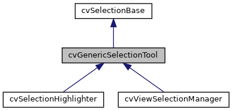
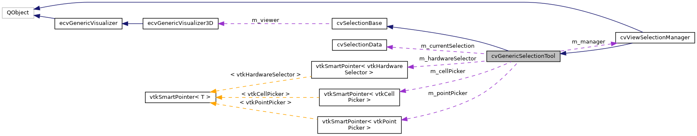

|
ACloudViewer
3.9.4
A Modern Library for 3D Data Processing
|
|
ACloudViewer
3.9.4
A Modern Library for 3D Data Processing
|
Base class for selection tools with picking capabilities. More...
#include <cvGenericSelectionTool.h>


Public Types | |
| using | SelectionMode = ::SelectionMode |
| Selection mode Now using global SelectionMode enum from cvSelectionTypes.h. More... | |
| using | SelectionModifier = ::SelectionModifier |
| Selection modifier (for multi-selection) Now using global SelectionModifier enum from cvSelectionTypes.h. More... | |
Public Member Functions | |
| cvGenericSelectionTool () | |
| ~cvGenericSelectionTool () override=default | |
| void | setSelectionManager (cvViewSelectionManager *manager) |
| Set the selection manager (to access pipeline) More... | |
| cvViewSelectionManager * | getSelectionManager () const |
| Get the selection manager. More... | |
| cvSelectionPipeline * | getSelectionPipeline () const |
| Get the selection pipeline from manager. More... | |
| vtkPolyData * | getPolyDataForSelection (const cvSelectionData *selectionData=nullptr) override |
| Get polyData for a selection using ParaView-style priority (override) More... | |
 Public Member Functions inherited from cvSelectionBase Public Member Functions inherited from cvSelectionBase | |
| cvSelectionBase () | |
| virtual | ~cvSelectionBase ()=default |
| virtual void | setVisualizer (ecvGenericVisualizer3D *viewer) |
| Set the visualizer instance. More... | |
| ecvGenericVisualizer3D * | getVisualizer () const |
| Get the visualizer instance. More... | |
Protected Member Functions | |
| cvSelectionData | hardwareSelectAtPoint (int x, int y, SelectionMode mode=SelectionMode::SELECT_SURFACE_CELLS, SelectionModifier modifier=SelectionModifier::SELECTION_DEFAULT) |
| Hardware-accelerated selection (ParaView-aligned) More... | |
| cvSelectionData | hardwareSelectInRegion (const int region[4], SelectionMode mode=SelectionMode::SELECT_SURFACE_CELLS, SelectionModifier modifier=SelectionModifier::SELECTION_DEFAULT) |
| Perform hardware selection in a region. More... | |
| QVector< cvActorSelectionInfo > | getActorsAtPoint (int x, int y) |
| Get all actors at a screen location (without full selection) More... | |
| void | setUseHardwareSelection (bool enable) |
| Hardware selection configuration. More... | |
| bool | useHardwareSelection () const |
| Check if hardware selection is enabled. More... | |
| void | setCaptureZValues (bool capture) |
| Set whether to capture Z-buffer values. More... | |
| void | setMultipleSelectionMode (bool enable) |
| Enable/disable multi-selection mode. More... | |
| bool | multipleSelectionMode () const |
| Check if multi-selection is enabled. More... | |
| void | initializePickers () |
| Software picking methods (unified from subclasses) More... | |
| vtkIdType | pickAtPosition (int x, int y, bool selectCells) |
| Pick element at screen position. More... | |
| vtkIdType | pickAtCursor (bool selectCells) |
| Pick element at current cursor position. More... | |
| void | setInteractor (vtkRenderWindowInteractor *interactor) |
| Set the interactor for picking. More... | |
| vtkRenderWindowInteractor * | getInteractor () const |
| Get the interactor. More... | |
| void | setRenderer (vtkRenderer *renderer) |
| Set the renderer for picking. More... | |
| vtkRenderer * | getPickingRenderer () const |
| Get the renderer (for picking) More... | |
| void | setPickerTolerance (double cellTolerance, double pointTolerance) |
| Set picker tolerance. More... | |
| vtkActor * | getPickedActor (bool selectCells) |
| Get the last picked actor. More... | |
| vtkPolyData * | getPickedPolyData (bool selectCells) |
| Get the last picked polyData. More... | |
| bool | getPickedPosition (bool selectCells, double position[3]) |
| Get pick position in world coordinates. More... | |
| cvSelectionData | createSelectionFromPick (vtkIdType pickedId, bool selectCells) |
| Create cvSelectionData from software picking result. More... | |
| cvSelectionData | applySelectionModifierUnified (const cvSelectionData &newSelection, const cvSelectionData ¤tSelection, int modifier, int fieldAssociation) |
| Apply selection modifier to combine selections. More... | |
| Protected Member Functions inherited from cvSelectionBase | |
| PclUtils::PCLVis * | getPCLVis () const |
| Get PCLVis instance (for VTK-specific operations) More... | |
| bool | hasValidPCLVis () const |
| Check if visualizer is valid and is PCLVis. More... | |
| vtkDataSet * | getDataFromActor (vtkActor *actor) |
| Get data object from a specific actor (ParaView-style) More... | |
| QList< vtkActor * > | getDataActors () const |
| Get all visible data actors from visualizer. More... | |
| std::vector< vtkPolyData * > | getAllPolyDataFromVisualizer () |
| Get all polyData from the visualizer. More... | |
Protected Attributes | |
| cvViewSelectionManager * | m_manager |
| Manager reference (for pipeline access) More... | |
| vtkSmartPointer< vtkCellPicker > | m_cellPicker |
| Software picking components (unified from subclasses) More... | |
| vtkSmartPointer< vtkPointPicker > | m_pointPicker |
| Point picker. More... | |
| vtkRenderWindowInteractor * | m_interactor |
| Interactor (weak pointer) More... | |
| vtkRenderer * | m_renderer |
| Renderer (weak pointer) More... | |
| bool | m_useHardwareSelection |
| Hardware selection components (reused for performance) More... | |
| bool | m_captureZValues |
| Capture Z-buffer values. More... | |
| bool | m_multipleSelectionMode |
| Allow multiple selections. More... | |
| cvSelectionData | m_currentSelection |
| Current selection (for modifiers) More... | |
| vtkSmartPointer< vtkHardwareSelector > | m_hardwareSelector |
| Hardware selector (reused) More... | |
| Protected Attributes inherited from cvSelectionBase | |
| ecvGenericVisualizer3D * | m_viewer |
| Visualizer instance (abstract interface) More... | |
Base class for selection tools with picking capabilities.
Inherits from cvSelectionBase and adds:
Use this class when you need picking/selection functionality. For components that only need visualizer access, use cvSelectionBase instead.
ParaView-Aligned Features:
Definition at line 47 of file cvGenericSelectionTool.h.
Selection mode Now using global SelectionMode enum from cvSelectionTypes.h.
Definition at line 53 of file cvGenericSelectionTool.h.
Selection modifier (for multi-selection) Now using global SelectionModifier enum from cvSelectionTypes.h.
Definition at line 59 of file cvGenericSelectionTool.h.
|
inline |
Definition at line 61 of file cvGenericSelectionTool.h.
|
overridedefault |
|
protected |
Apply selection modifier to combine selections.
| newSelection | New selection to combine |
| currentSelection | Current selection (or empty for replace) |
| modifier | Modifier defining combination operation |
| fieldAssociation | Field association (0=cells, 1=points) |
ParaView-aligned: Uses cvSelectionPipeline::combineSelections() Reference: pqRenderViewSelectionReaction selection modifier handling
Definition at line 746 of file cvGenericSelectionTool.cpp.
References cvSelectionPipeline::combineSelections(), cvSelectionPipeline::OPERATION_ADDITION, cvSelectionPipeline::OPERATION_DEFAULT, cvSelectionPipeline::OPERATION_SUBTRACTION, cvSelectionPipeline::OPERATION_TOGGLE, CVLog::PrintVerbose(), and CVLog::Warning().
|
protected |
Create cvSelectionData from software picking result.
| pickedId | The picked element ID |
| selectCells | If true, selecting cells; if false, selecting points |
Convenience method to convert software picking result to cvSelectionData with full actor information. This bridges software and hardware selection.
Definition at line 700 of file cvGenericSelectionTool.cpp.
References cvActorSelectionInfo::actor, cvSelectionData::addActorInfo(), cvSelectionData::CELLS, getPickedActor(), getPickedPolyData(), getPickedPosition(), cvSelectionData::POINTS, cvActorSelectionInfo::polyData, CVLog::PrintVerbose(), and cvActorSelectionInfo::zValue.
|
protected |
Get all actors at a screen location (without full selection)
| x | X coordinate |
| y | Y coordinate |
Fast query to find what actors are at a given screen position. Useful for tooltips and hover highlighting.
Definition at line 245 of file cvGenericSelectionTool.cpp.
References cvSelectionBase::hasValidPCLVis(), x, and y.
|
inlineprotected |
Get the interactor.
Definition at line 266 of file cvGenericSelectionTool.h.
|
protected |
Get the last picked actor.
| selectCells | If true, get from cell picker; if false, from point picker |
Call this after pickAtPosition/pickAtCursor to get the actor that was picked. Useful for multi-actor scenarios to identify which actor was clicked.
Definition at line 649 of file cvGenericSelectionTool.cpp.
References m_cellPicker, and m_pointPicker.
Referenced by createSelectionFromPick(), and getPickedPolyData().
|
protected |
Get the last picked polyData.
| selectCells | If true, get from cell picker; if false, from point picker |
Convenience method to get the polyData from the picked actor's mapper.
Definition at line 659 of file cvGenericSelectionTool.cpp.
References getPickedActor().
Referenced by createSelectionFromPick().
|
protected |
Get pick position in world coordinates.
| selectCells | If true, get from cell picker; if false, from point picker |
| position | Output: world position [x, y, z] |
Definition at line 687 of file cvGenericSelectionTool.cpp.
References m_cellPicker, m_pointPicker, and position.
Referenced by createSelectionFromPick().
|
inlineprotected |
Get the renderer (for picking)
Definition at line 277 of file cvGenericSelectionTool.h.
|
overridevirtual |
Get polyData for a selection using ParaView-style priority (override)
| selectionData | Optional selection data to extract from (highest priority) |
This method extends cvSelectionBase::getPolyDataForSelection() by adding: Priority 2: From current selection's actor info (m_currentSelection)
Full priority order: Priority 1: From selectionData's actor info (if provided and has actor info) Priority 2: From current selection's actor info (m_currentSelection) [NEW] Priority 3: From selection manager's getPolyData() (uses last selection) Priority 4: From first data actor (fallback for non-selection operations)
This override provides enhanced functionality for selection tools.
Reimplemented from cvSelectionBase.
Definition at line 64 of file cvGenericSelectionTool.cpp.
References cvSelectionBase::getPolyDataForSelection(), cvSelectionData::hasActorInfo(), m_currentSelection, cvSelectionData::primaryPolyData(), and CVLog::PrintVerbose().
Referenced by cvSelectionHighlighter::highlightSelection().
|
inline |
Get the selection manager.
Definition at line 84 of file cvGenericSelectionTool.h.
| cvSelectionPipeline * cvGenericSelectionTool::getSelectionPipeline | ( | ) | const |
Get the selection pipeline from manager.
Definition at line 56 of file cvGenericSelectionTool.cpp.
References cvViewSelectionManager::getPipeline(), and m_manager.
Referenced by hardwareSelectInRegion().
|
protected |
Hardware-accelerated selection (ParaView-aligned)
These methods provide GPU-accelerated selection using vtkHardwareSelector. They return cvSelectionData with full actor information and Z-value ordering.
Perform hardware selection at a point
| x | X coordinate in window space |
| y | Y coordinate in window space |
| mode | Selection mode (cells/points) |
| modifier | Selection modifier (replace/add/subtract/toggle) |
Uses vtkHardwareSelector for precise, GPU-accelerated selection. Returns selection with actor information sorted by Z-value.
Definition at line 97 of file cvGenericSelectionTool.cpp.
References hardwareSelectInRegion(), x, and y.
|
protected |
Perform hardware selection in a region.
| region | Selection region [x1, y1, x2, y2] |
| mode | Selection mode |
| modifier | Selection modifier |
Definition at line 104 of file cvGenericSelectionTool.cpp.
References cvSelectionPipeline::combineSelections(), cvSelectionPipeline::convertToCvSelectionData(), cvSelectionPipeline::executeRectangleSelection(), cvSelectionPipeline::FIELD_ASSOCIATION_CELLS, cvSelectionPipeline::FIELD_ASSOCIATION_POINTS, cvSelectionPipeline::FRUSTUM_CELLS, cvSelectionPipeline::FRUSTUM_POINTS, getSelectionPipeline(), cvSelectionBase::hasValidPCLVis(), cvSelectionData::isEmpty(), m_currentSelection, m_multipleSelectionMode, cvSelectionPipeline::OPERATION_ADDITION, cvSelectionPipeline::OPERATION_DEFAULT, cvSelectionPipeline::OPERATION_SUBTRACTION, cvSelectionPipeline::OPERATION_TOGGLE, CVLog::PrintVerbose(), SELECT_FRUSTUM_CELLS, SELECT_FRUSTUM_POINTS, SELECT_SURFACE_CELLS, SELECT_SURFACE_POINTS, SELECTION_ADDITION, SELECTION_DEFAULT, SELECTION_SUBTRACTION, SELECTION_TOGGLE, cvSelectionPipeline::SURFACE_CELLS, cvSelectionPipeline::SURFACE_POINTS, and CVLog::Warning().
Referenced by hardwareSelectAtPoint().
|
protected |
Software picking methods (unified from subclasses)
These methods provide software-based picking using VTK pickers. All selection tools can use these methods without duplicating code.
Initialize cell and point pickers
Creates and configures vtkCellPicker and vtkPointPicker with default tolerances. Call this before using pickAtPosition.
Tolerance defaults:
Definition at line 553 of file cvGenericSelectionTool.cpp.
References m_cellPicker, m_pointPicker, and CVLog::PrintVerbose().
Referenced by pickAtPosition(), and setPickerTolerance().
|
inlineprotected |
Check if multi-selection is enabled.
Definition at line 209 of file cvGenericSelectionTool.h.
|
protected |
Pick element at current cursor position.
| selectCells | If true, pick cells; if false, pick points |
Convenience method that gets the current cursor position from the interactor and calls pickAtPosition.
Definition at line 619 of file cvGenericSelectionTool.cpp.
References m_interactor, pickAtPosition(), and CVLog::Warning().
|
protected |
Pick element at screen position.
| x | X coordinate in screen space |
| y | Y coordinate in screen space |
| selectCells | If true, pick cells; if false, pick points |
This method uses vtkCellPicker or vtkPointPicker based on selectCells. The interactor and renderer must be set before calling this method.
Definition at line 568 of file cvGenericSelectionTool.cpp.
References initializePickers(), m_cellPicker, m_pointPicker, m_renderer, CVLog::PrintVerbose(), CVLog::Warning(), x, and y.
Referenced by pickAtCursor().
|
inlineprotected |
Set whether to capture Z-buffer values.
| capture | If true, capture Z values for depth sorting |
Definition at line 196 of file cvGenericSelectionTool.h.
|
inlineprotected |
Set the interactor for picking.
| interactor | The render window interactor |
Definition at line 259 of file cvGenericSelectionTool.h.
|
inlineprotected |
Enable/disable multi-selection mode.
| enable | If true, allow multiple selections |
Definition at line 202 of file cvGenericSelectionTool.h.
|
protected |
Set picker tolerance.
| cellTolerance | Tolerance for cell picker |
| pointTolerance | Tolerance for point picker |
Definition at line 631 of file cvGenericSelectionTool.cpp.
References initializePickers(), m_cellPicker, m_pointPicker, and CVLog::PrintVerbose().
|
inlineprotected |
Set the renderer for picking.
| renderer | The renderer |
Definition at line 272 of file cvGenericSelectionTool.h.
|
inline |
Set the selection manager (to access pipeline)
| manager | The view selection manager |
Definition at line 76 of file cvGenericSelectionTool.h.
|
inlineprotected |
Hardware selection configuration.
Enable/disable hardware selection
| enable | If true, use vtkHardwareSelector; if false, use software methods |
When enabled, selection tools will use GPU-accelerated hardware selection for better accuracy and multi-actor support.
Definition at line 183 of file cvGenericSelectionTool.h.
|
inlineprotected |
Check if hardware selection is enabled.
Definition at line 190 of file cvGenericSelectionTool.h.
|
protected |
Capture Z-buffer values.
Definition at line 404 of file cvGenericSelectionTool.h.
|
protected |
Software picking components (unified from subclasses)
Cell picker
Definition at line 397 of file cvGenericSelectionTool.h.
Referenced by getPickedActor(), getPickedPosition(), initializePickers(), pickAtPosition(), and setPickerTolerance().
|
protected |
Current selection (for modifiers)
Definition at line 406 of file cvGenericSelectionTool.h.
Referenced by getPolyDataForSelection(), and hardwareSelectInRegion().
|
protected |
Hardware selector (reused)
Definition at line 408 of file cvGenericSelectionTool.h.
|
protected |
Interactor (weak pointer)
Definition at line 399 of file cvGenericSelectionTool.h.
Referenced by pickAtCursor().
|
protected |
Manager reference (for pipeline access)
Selection manager (weak pointer)
Definition at line 394 of file cvGenericSelectionTool.h.
Referenced by getSelectionPipeline().
|
protected |
Allow multiple selections.
Definition at line 405 of file cvGenericSelectionTool.h.
Referenced by hardwareSelectInRegion().
|
protected |
Point picker.
Definition at line 398 of file cvGenericSelectionTool.h.
Referenced by getPickedActor(), getPickedPosition(), initializePickers(), pickAtPosition(), and setPickerTolerance().
|
protected |
Renderer (weak pointer)
Definition at line 400 of file cvGenericSelectionTool.h.
Referenced by pickAtPosition().
|
protected |
Hardware selection components (reused for performance)
Use hardware selection
Definition at line 403 of file cvGenericSelectionTool.h.